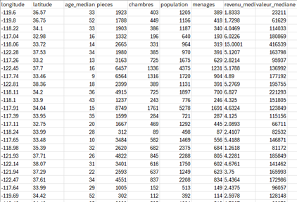
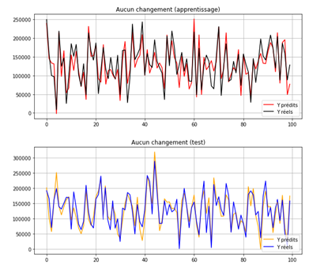

Explaining and predicting a quantitative variable from several factors
For this project, we used Machine Learning in Python to estimate the value of real-estate properties. We had data with several variables describing the houses, such as median income, geographic location, number of bedrooms, and population. We wrote a Python script to estimate the value of these groups.
The estimation of the prices started with a data-cleaning phase, where we had to deal with missing values and extreme values. Since we had 20,300 rows of data and only 7 missing values, we decided to simply remove those rows, since we felt there was still enough data left. For the extreme values, an exploratory analysis showed that the data was not evenly spread, some variables had much more variation than others. Different methods for handling extreme values were tested to deal with this.
Once the data was ready, we could start to estimate the value of the properties. The Python library SciPy offered tools to build a Machine Learning model using multiple linear regression. We splitted the data into two sets: a training set and a test set to check the quality of the model. To train the model, we used cross-validation, which tests the model's performance by splitting the data into smaller groups that take turns being the training set and the test set. Once the model was trained, we could make the predictions. The model was tested with different methods for handling extreme values, to see if this changed the results. In the end, the method that gave the best results was the one that kept the extreme values.
The project ended by writing a report to summarize the steps we followed to reach our results.
Skills learned:
- Deepening my knowledge of Python
- Learning and using methods for handling extreme values
- Learning the basics and case uses of Machine Learning
Illustrations

Overview of the data used

Some of the results, which show the real and predicted data